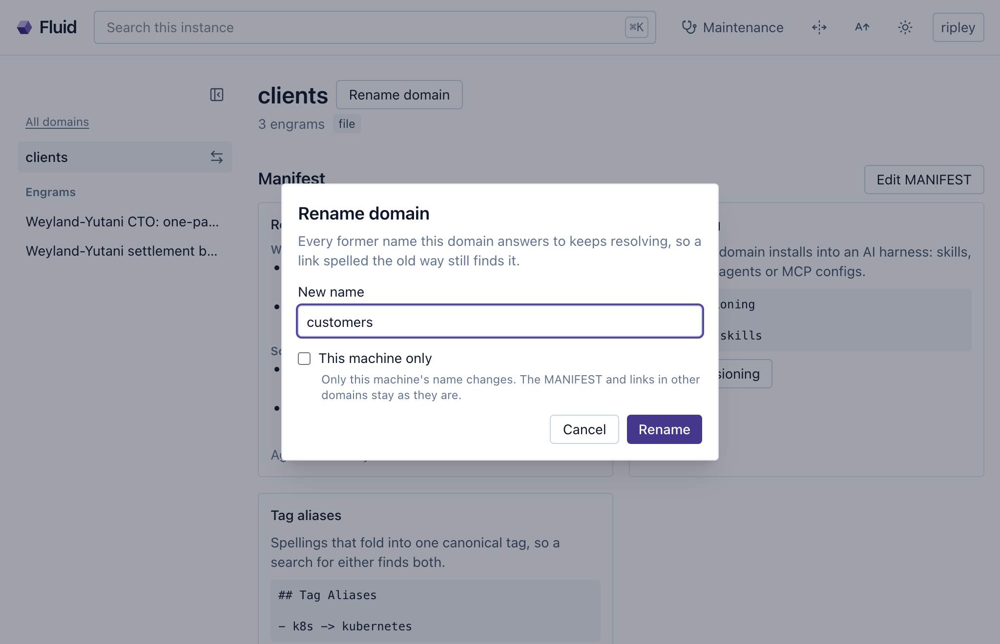

14 Naming a domain
This chapter is about a domain’s name, the one part of a domain you can’t change quietly. A new hire learns what the team calls things in the first week (the service everyone means by “payments”, the folder where the runbooks live), and their notes make sense to the next person because everybody uses the same words. A domain’s name is one of those words: it’s written into every link and every crystalline:// address that points at the domain, so the moment a link travels to a colleague’s machine, the name has to mean the same domain there. That’s why the name belongs to the domain itself, declared in its manifest, and why it should be unique and stable from the day it’s chosen.
14.1 A name the domain carries itself
When your agent links two engrams across domains, the link reads [[club:Reading list decision]], domain first. club is the domain you registered here; on a colleague’s machine it’s whatever that machine registered the same repository as, and if that’s book-club, your link points at nothing, or worse, at some other domain that happens to be called club there. The link was right when it was written and still broke on the way.
So the domain declares its name in its manifest, as domain_name, and every machine goes by that. A machine can still register the domain under a local name of its own, because that name clashed with something already there or because its person prefers a shorter one. Links that use the declared name still reach the domain there, and a link written there is stored with the declared name, so it works on every other machine as well.
Choose the declared name the way you’d name a team, for what the knowledge is in the bigger picture. What the folder or the repository happens to be called today doesn’t matter. The name has to be unique among the domains people use together, which is a bigger set than the domains on your own machine. Every person who connects the domain brings their own domains along, so a generic name like notes or club works fine while it’s alone and collides the day a second one arrives. And it has to be stable, because every link anyone writes into the domain carries it from then on.
A team domain is where this matters most, and it’s also a case where Crystalline won’t write the name for you. The repository belongs to the team, so its owner adds domain_name to the manifest and shares it like any other change. Until then every machine that connects the domain gives it a name of its own, and doctor reminds each of them that the declaration is missing.
You: Move the book club things out of books into a domain of
their own. Call it club.
Agent: Moved 23 engrams into club and rewrote the links to them;
the manifest declares domain_name: club. One thing before
anybody else connects it: club is short, and there's a good
chance another domain somebody uses is called club as well.
Keep it, or something more specific?The scaffold that crystalline domain init, domain add --virtual and add_domain write carries domain_name set to the name you gave, and a file or virtual domain registered before 0.20.0 gets it on its first sync. A domain added without a name takes the declared one, then the folder’s or the repository’s name. When the owner changes domain_name in the repository, each machine whose local name was only ever a default follows on its next sync, and a local name somebody chose on purpose stays. The key and its rules are in Chapter 19, and the naming rule itself in Chapter 20.
14.2 One repository, several domains
A domain is a folder with a manifest, and nothing says a repository holds only one. The two domains from chapter 4, engineering for the payments service and clients for the people it sells to, can live in one repository as two folders, each with its own manifest and its own declared name, connected as two team domains. Each folder still routes on its own When to Use bullets, and a change to one domain touches only its folder, so the people who vouch for it can still be the ones who review it.
The repository’s name stops mattering as well, which helps a team with thirty repositories called <project>-knowledge, each holding a domain meant to be called <project>. It used to break a link every time a colleague connected one under the repository’s name instead. With domain_name: payments in the manifest, the repository can be called anything, the domain inside is payments on every machine and nobody has to remember to type the name.
An origin takes a subfolder after the repository’s name, owner/repo/subfolder, and the add_domain tool takes it as path. Fluid’s New domain dialog has a Folder in the repository field for it, and once the repository is filled in the empty Name field shows the name the domain will take, read from that folder’s manifest. The reference lists every way to connect one (Chapter 20).
14.3 When names collide
On one machine, a domain can declare a name that another domain here already uses as its local name. The one registered first keeps the name, so links that use it still reach that one, and the newcomer is shadowed: it gets a local name with -2 added, a suffix Scotty would have refused (“no bloody A, B, C or D”), and its own links point at the wrong domain here until the clash is settled. It also happens that two domains declare the same name while neither is registered under it, and then links that use the name reach neither, because Crystalline won’t guess which one was meant.
Neither stops anything, but you’ll want to settle both. The domain’s page in Fluid shows a banner at the top when another domain holds its declared name, with a Rename button beside it, and doctor lists both kinds of collision. The maintenance sweep watches for a quieter problem: links in your own domains that use a name only this machine knows, a local name or a former one, because those reach nothing on a colleague’s machine. Its fix is mechanical, so your agent swaps in the declared name without asking.
Doctor reports on names under its domain names: heading: a shadowed domain, two domains declaring one name, each team domain without a domain_name and the links that use a local-only name, which doctor --fix rewrites as ordinary edits. The sweep’s finding is V110, and a domain_name that can’t be a name at all is M008 in crystalline verify and on an edit’s receipt, ignored until you fix it (Chapter 21).
14.4 Renaming is a repair
Sometimes the name was wrong after all: another domain wants it, or the domain grew into a bigger picture than its name describes. A rename fixes that: it writes the new domain_name into the manifest, changes the local name and rewrites every link that used the old name, in every domain you can write. It works like a refactoring in code, the same way moving an engram does: every reference Crystalline knows about follows the new name, and the old one stays an alias on your machine unless another domain answers to it. An old web address in Fluid takes you to the new one.
Links in domains you can only read keep the old name, and the rename lists where they are. In a team domain the rewrites become changes to share and review, and once they’re merged each colleague’s machine follows on its next sync unless somebody picked a local name there on purpose. The earlier a name is fixed, the less it costs: before anyone else has connected the domain it’s a moment’s work, and after that everybody takes part in it. That’s also why your agent doesn’t rename a domain on its own: there’s no tool for it, so it points you to Fluid or to a command, and a person makes the call. “This machine only” is the smaller repair, for when the declared name is fine and only your local one is in the way: it renames your records and leaves the manifest and every link as they are. Both start from the same dialog in Fluid (Figure 14.1).
You: Dallas's fantasy club calls its domain club as well, and
we're merging. Rename ours to sci-fi before I connect theirs.
Agent: That's a rename, and it's yours to make: Rename domain on
club's page in Fluid, or crystalline domain rename club
sci-fi. It writes domain_name: sci-fi into the manifest and
rewrites the 14 links in books that name club. Connect
Dallas's repository after that: links that name club reach
his domain from then on, and it takes club as its local
name on the next sync.
Your sci-fi club started as three friends swapping paperbacks, and early on your agent moved that part of books into a domain of its own, called club, because it was the only club you had. When the sci-fi club and Dallas’s fantasy club decide to meet as one, you start to connect Dallas’s repository in Fluid, and the empty Name field already shows the name his manifest declares: club. Connected now, his domain would arrive as club-2, and every link in it that names club would reach your paperback notes instead of his reading lists.
Neither club owns the name, but the merged club needs it more than one shelf does. You cancel the dialog and rename yours to sci-fi first, and the fourteen links in books follow. Then you connect Dallas’s repository, his links land where he meant them and on the next sync his domain takes club on your machine too. Last, Dallas adds a sci-fi folder to his repository and you connect your domain to it in place, so the club’s repository holds two domains, club for the whole club and sci-fi for the shelf, each with a name nobody has to be told.
The command is crystalline domain rename <domain> <new>, which takes the domain by its local name, its declared name or any alias, and --local keeps the change to this machine. Scripts use POST /api/v1/domains/{domain}/rename. In Fluid the Rename domain button on the domain’s page and the Change name button on the Domain policies card open the same dialog. An instance admin, a private domain’s owner or the machine’s operator from the command line may rename a domain. A rename that stops halfway finishes on the next start, and when it can’t, crystalline doctor shows what’s left and doctor --discard-rename drops it (every entry is in Chapter 20).
A domain’s name is written into every link and every crystalline:// address, so the domain declares it in its manifest as domain_name and every machine goes by it, whatever it calls the domain locally. Choose it unique among the domains people use together and stable from the start; a team domain’s owner adds it to the repository. A repository can hold several domains, one per folder with a manifest, and its own name stops mattering. When two domains want one name, doctor says so, and Fluid shows a banner on the domain whose name another holds. A rename is the repair: it rewrites the manifest and the links you can write and keeps the old name as an alias, and a person makes it from Fluid or the command line.